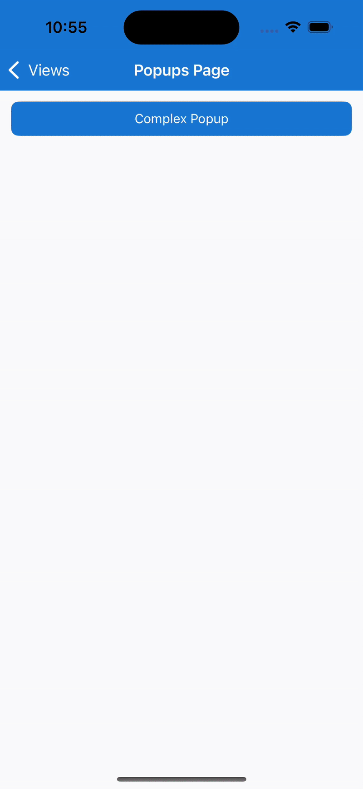

Popups - Combining Popup features to provide a comprehensive example
This page makes use of the following features to provide a comprehensive example:
PopupIPopupServicePopupOptions- Customizing aPopupbehavior and appearancePopup- Returning a result
The example involves creating a popup and view model pairing, registering this pair with the dependency injection services, binding the PopupOptions to the current pages view model, showing the Popup using the PopupService and finally having the Popup view model return a result when the button is tapped by the user.
Creating the ComplexPopupViewModel
This will serve as the view model for the popup.
Important
Please note that this example relies on using the .NET Community Toolkit. For information on how to use this please refer to the .NET Community Toolkit documentation.
using CommunityToolkit.Mvvm.ComponentModel;
using CommunityToolkit.Mvvm.Input;
namespace CommunityToolkit.Maui.Sample.ViewModels.Views;
public partial class ComplexPopupViewModel(IPopupService popupService) : ObservableObject
{
readonly IPopupService popupService = popupService;
readonly INavigation navigation =
Application.Current?.Windows[0].Page?.Navigation ??
throw new InvalidOperationException("Unable to locate INavigation");
[ObservableProperty, NotifyCanExecuteChangedFor(nameof(ReturnButtonTappedCommand))]
public partial string ReturnText { get; set; } = string.Empty;
bool CanReturnButtonExecute => ReturnText?.Length > 0;
[RelayCommand(CanExecute = nameof(CanReturnButtonExecute))]
async Task OnReturnButtonTapped(CancellationToken token)
{
await popupService.ClosePopupAsync<string>(navigation, ReturnText, token);
}
}
Creating the ComplexPopup
This will serve as the content of the popup to be displayed.
The easiest way to create a Popup<T> is to add a new .NET MAUI ContentView (XAML) to your project, this will create 2 files; a *.xaml file and a *.xaml.cs file. The contents of each file can be replaced with the following:
XAML File
<?xml version="1.0" encoding="utf-8"?>
<toolkit:Popup xmlns="http://schemas.microsoft.com/dotnet/2021/maui"
xmlns:x="http://schemas.microsoft.com/winfx/2009/xaml"
xmlns:toolkit="http://schemas.microsoft.com/dotnet/2022/maui/toolkit"
xmlns:vm="clr-namespace:CommunityToolkit.Maui.Sample.ViewModels.Views"
xmlns:system="clr-namespace:System;assembly=System.Runtime"
x:Class="CommunityToolkit.Maui.Sample.Views.Popups.ComplexPopup"
x:DataType="vm:ComplexPopupViewModel"
x:TypeArguments="system:String">
<toolkit:Popup.Resources>
<toolkit:AppThemeColor Light="Black" Dark="Black" x:Key="TextColor" />
</toolkit:Popup.Resources>
<VerticalStackLayout Spacing="12">
<Label Text="Complex Popup"
TextColor="{toolkit:AppThemeResource TextColor}"
FontSize="24"
HorizontalTextAlignment="Center"
VerticalTextAlignment="Center"
HorizontalOptions="Center"
VerticalOptions="Center"
FontAttributes="Bold" />
<Label x:Name="DescriptionLabel"
Text="This text will change upon the Opened event firing"
TextColor="{toolkit:AppThemeResource TextColor}"
HorizontalTextAlignment="Center"
VerticalTextAlignment="Center"
HorizontalOptions="Center"
VerticalOptions="Center"
LineBreakMode="WordWrap" />
<Entry Placeholder="Enter text here then click Return"
HorizontalOptions="Center"
VerticalOptions="Center"
Text="{Binding ReturnText, Mode=OneWayToSource}"
TextColor="{toolkit:AppThemeResource TextColor}"/>
<Button Text="Return"
HorizontalOptions="Center"
VerticalOptions="Center"
Command="{Binding ReturnButtonTappedCommand}" />
</VerticalStackLayout>
</toolkit:Popup>
XAML Code-Behind File
using CommunityToolkit.Maui.Sample.ViewModels.Views;
using CommunityToolkit.Maui.Views;
namespace CommunityToolkit.Maui.Sample.Views.Popups;
public partial class ComplexPopup : Popup<string>
{
public ComplexPopup(ComplexPopupViewModel viewModel)
{
InitializeComponent();
CanBeDismissedByTappingOutsideOfPopup = false;
BindingContext = viewModel;
Opened += HandlePopupOpened;
}
async void HandlePopupOpened(object? sender, EventArgs e)
{
// Delay for one second to ensure the user sees the previous text
await Task.Delay(TimeSpan.FromSeconds(1));
DescriptionLabel.Text = "This Popup demonstrates constructor injection to pass in a value using Dependency Injection using PopupService, demonstrates how to use the Opened event to trigger an action once the Popup appears, demonstrates how to bind to PopupOptions, and demonstrates how to return a result.";
}
}
Registering the Popup with Dependency Injection
Inside the MauiProgram.cs file the following line needs to be added to the CreateMauiApp method in order to register the ComplexPopup and ComplexPopupViewModel types with dependency injection but to also make it possible to use the IPopupService to display the popup.
services.AddTransientPopup<ComplexPopup, ComplexPopupViewModel>();
Creating the PopupsPageViewModel
This will serve as the view model for the page used to display the popup.
using CommunityToolkit.Mvvm.ComponentModel;
using CommunityToolkit.Mvvm.Input;
namespace CommunityToolkit.Maui.Sample.ViewModels.Views;
public partial class PopupsViewModel(IPopupService popupService) : BaseViewModel
{
[ObservableProperty]
public partial Color PageOverlayBackgroundColor { get; set; } = Colors.Orange.WithAlpha(0.2f);
[RelayCommand]
async Task OnComplexPopupOpened(CancellationToken token)
{
// Rotate the PopupOptions.PageOverlayBackgroundColor every second
while (!token.IsCancellationRequested)
{
PageOverlayBackgroundColor = Color.FromRgba(Random.Shared.NextDouble(), Random.Shared.NextDouble(), Random.Shared.NextDouble(), 0.2f);
await Task.Delay(TimeSpan.FromSeconds(1), CancellationToken.None);
}
}
}
Creating the PopupsPage
XAML File
<ContentPage
xmlns="http://schemas.microsoft.com/dotnet/2021/maui"
xmlns:x="http://schemas.microsoft.com/winfx/2009/xaml"
xmlns:pages="clr-namespace:CommunityToolkit.Maui.Sample.Pages"
xmlns:viewModels="clr-namespace:CommunityToolkit.Maui.Sample.ViewModels.Views"
x:Class="CommunityToolkit.Maui.Sample.Pages.Views.PopupsPage"
Title="Popups Page"
x:DataType="viewModels:PopupsViewModel">
<Button Text="Complex Popup" Clicked="HandleComplexPopupClicked" />
</ContentPage>
XAML Code-Behind File
using CommunityToolkit.Maui.Alerts;
using CommunityToolkit.Maui.Extensions;
using CommunityToolkit.Maui.Markup;
using CommunityToolkit.Maui.Sample.Pages.Views.Popup;
using CommunityToolkit.Maui.Sample.ViewModels.Views;
using CommunityToolkit.Maui.Sample.Views.Popups;
using Microsoft.Maui.Controls.Shapes;
namespace CommunityToolkit.Maui.Sample.Pages.Views;
public partial class PopupsPage : ContentPage
{
readonly IPopupService popupService;
readonly PopupsViewModel viewModel;
public PopupsPage(PopupsViewModel multiplePopupViewModel, IPopupService popupService)
{
this.popupService = popupService;
this.viewModel = multiplePopupViewModel;
InitializeComponent();
BindingContext = multiplePopupViewModel;
}
async void HandleComplexPopupClicked(object? sender, EventArgs e)
{
var complexPopupOpenedCancellationTokenSource = new CancellationTokenSource();
var complexPopupOptions = new PopupOptions
{
BindingContext = this.viewModel,
Shape = new RoundRectangle
{
CornerRadius = new CornerRadius(4),
StrokeThickness = 12,
Stroke = Colors.Orange
}
};
complexPopupOptions.SetBinding<PopupsViewModel, Color>(
PopupOptions.PageOverlayColorProperty,
static x => x.PageOverlayBackgroundColor);
var popupResultTask = popupService.ShowPopupAsync<ComplexPopup, string>(
Navigation,
complexPopupOptions,
CancellationToken.None);
// Trigger Command in ViewModel to Rotate PopupOptions.PageOverlayColorProperty
this.viewModel.ComplexPopupOpenedCommand.Execute(complexPopupOpenedCancellationTokenSource.Token);
var popupResult = await popupResultTask;
await complexPopupOpenedCancellationTokenSource.CancelAsync();
if (!popupResult.WasDismissedByTappingOutsideOfPopup)
{
// Display Popup Result as a Toast
await Toast.Make($"You entered {popupResult.Result}").Show(CancellationToken.None);
}
}
}
The result

Examples
You can find an example of this feature in action in the .NET MAUI Community Toolkit Sample Application.
API
You can find the source code for Popup over on the .NET MAUI Community Toolkit GitHub repository.